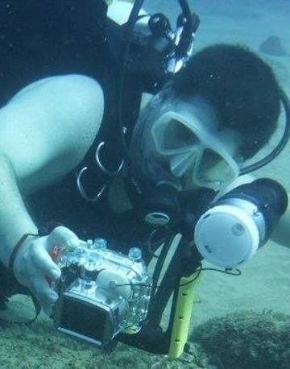

Origin & purpose of the site:
This site was created to satisfy the need for a portable, living, geographically-specific list of opistobranch species.
The recent wave of genera name
changes and movements highlighted the need for an identification resource that is easy to update and accessable to nudibranch-enthusiasts.
Photos
The photos featured on this site have been published here with gracious permision of the photographers. Ownership remains with the photographer in question and you are kindly requested to get permission from them prior to reproducing or using the images. For this reason each image is labeled with the name of the photographer.
Acknowledgements
The success of this site depends on the cooperation and help from several individuals. Please visit the contributors page for some more information about them.
Errors, ommitions & New species
Yes, I am human, and no I am not the foremost expert on all things nudibranch. I am an IT nerd who happens to dive and love to hunt nudibranchs with my underwater camera rig.
I try to ensure the information listed here is correct and complete, but lets face it - an error or omition may(will) slip in at some point.
Please accept my appologies in advance and - instead of making a fuss about it - let me know so I can fix it.
Also, please understand the site is still in its infancy and I am at this point still making lots of changes.
Contact me
If you would like to contact me about information on this site, please email me.
That is all - please enjoy the site, and I hope it proves to be of value to you.
Kind regards,
Riaan Marx
